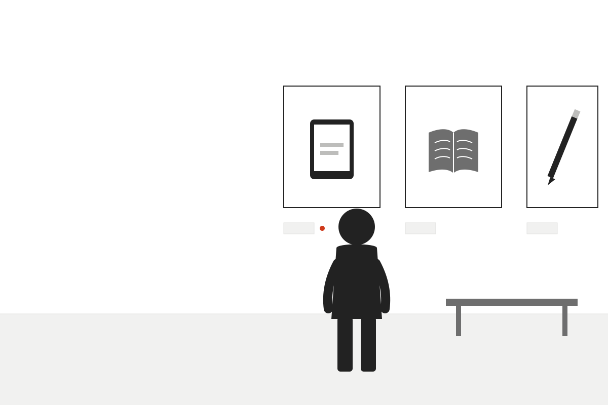
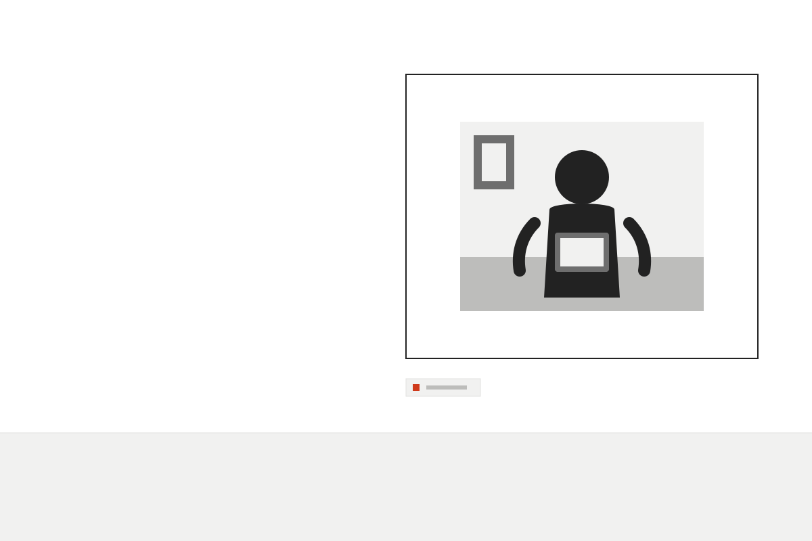

Wie Kinder Medien erleben – und was Schule daraus macht

Werbung, Vorbilder und Spiele im Kinderzimmer
Kinder lernen am besten, wenn Mediennutzung geteilt und besprochen wird.
Beispielzitat (sinngemäß)Gemeinsam schauen, gemeinsam reden – Fragen der Kinder ernst nehmen.
iLesehilfe: Beispielwerte zur Illustration des Stils – keine echten Daten.
Medienbildung beginnt nicht am Gerät, sondern im Gespräch.
Was fällt Ihnen an der Werbung zuerst auf?
Welche Gefühle soll sie bei Kindern wecken?
Wie würden Sie im Unterricht reagieren?
Medienkompetenz ist ein Gespräch, kein Vortrag.
Abb. 1: Beispielbild im Stil
| Medium | Alter | Begleitung |
|---|---|---|
| Bilderbuch-App | ab 4 | gemeinsam |
| Videoplattform | ab 6 | Absprache |
| Online-Spiel | ab 8 | Regeln |